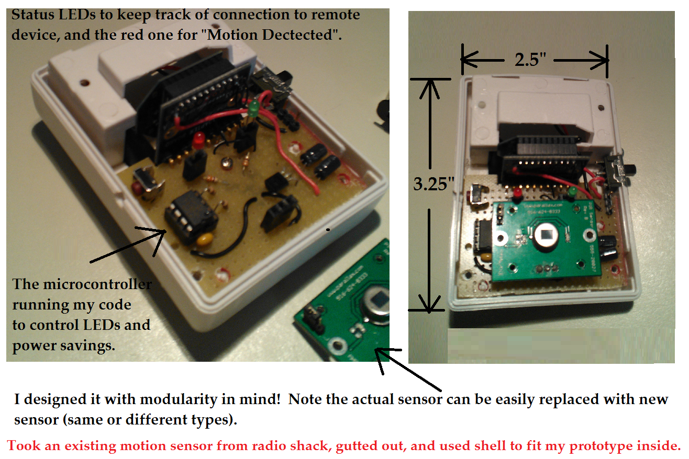

Signature Inventions
A collection of original systems and platforms I designed, architected, and delivered.
Watchport Manager (Invented)
Designed and developed one of the earliest IoT monitoring applications, shipped worldwide with Watchport sensors. Delivered real-time
environmental and camera-based monitoring, alerting, and pioneering remote visibility through built-in HTTP/HTTPS dashboards
(2001-2002).
[ View Watchport Manager Screenshot ]
SensorServ Predictive Monitoring System (Invented)
Created as the next-generation, unattended successor to Watchport Manager. Built as a native Windows Service providing proactive monitoring, early-issue detection, and automated alerting based on customer demand for a fully autonomous solution.
Watchport Camera Ecosystem
Engineered the full device ecosystem - drivers, firmware, and applications - supporting the Watchport camera line and enabling reliable, integrated deployments across diverse customer environments.
Modular Wireless PIR Motion Sensor Prototype (Invented)
Architected and engineered a custom, power-optimized wireless PIR (Passive Infrared) motion sensor prototype for rapid integration and testing. This system combines a PIC-based microcontroller running custom power-saving algorithms with an XBee wireless module for communication, ensuring extended operational life on battery power. Key accomplishments include the design of a modular pluggable sensor interface that facilitates rapid swapping of sensor types (PIR, environmental, or others) and the clever retrofitting of the entire hand-wired prototype, including its indicators (Red 'Motion Detected' and Green Link 'Status' LEDs), into a gutted Radio Shack sensor enclosure (3.25" x 2.5").
[ Expand Prototype Layout & Diagram ]

Click to view